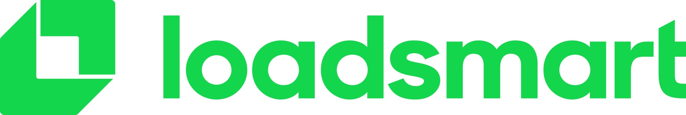

Programming Languages: Python, Dart, Golang, and SQL.
Email: andrzej.a.ziemecki@gmail.com
Phone: +48 734 426 150
Andrzej Ziemecki
Experiences
AI Strategic Cloud Engineer -

Warsaw, Poland
Sep 2023 - Now
-
Design and implement machine learning solutions for customer use cases, leveraging core Google products.
e.g. Improved customer's Recommendation System cold start problem and achieved 15% and 10% in precision and
recall
using LLMs capabilities and & MultiModal Embeddings to predict the most relevant products for new users.
Machine Learning Engineer -
Warsaw, Poland
Mar 2023 - Sep 2023 (7 months)
-
Computed and added all KPIs metrics in the Affirm's Looker Dashboards to increase team visibility
showing the system revenue and the ML performance of the online and offline services
by developing and deploying Airflow jobs, configuring external tables in Snowflake,
and adding the
corresponding changes into the Looker's LookML backend system.
Machine Learning Engineer -

Remote Worldwide
Dec 2021 - Nov 2022 (1 year)
-
Automated continuous integration, continuous delivery, and continuous training of Loadsmart's ML systems
helping Data Science teams deploy their pipelines and serve them in a RESTful API
by designing, developing, and testing an MLOps system integrated with AWS SageMaker, Redshift, and S3.
-
Designed the new carriers-shippers Loadsmart Recommendation System
and increased its accuracy from 12% to 33%, reducing the model complexity from six models to one
by designing, developing, deploying, and monitoring a new ML pipeline from scratch.
Data Scientist -
Mendoza, Argentina
Nov 2020 - Dec 2021 (1 year and 2 months)
-
Decreased the number of MercadoLibre fraudulent payments
and increased 0.5% the recall of the ML Fraud Prevention System without losing precision
by researching and improving their feature engineering and NN architectures in their ML Pipelines.
-
Reduced manual comparison time analysis of n machine learning models
by at most n times increasing Data Science teams productivity
by transforming a single analyzer system to a multiple analyzer system.
-
Speed up Data Analytics teams' fraudulent patterns research
by building an automated pattern finder based on a Decision Tree Classifier
able to parse all the decision tree rules into a query in BigQuery for their easy usage for further
analysis.
Software Engineer -
Mendoza, Argentina
Aug 2019 - Oct 2020 (1 year and 3 months)
-
Increased the investment system process performance from millions of users
and reducing 50% its execution time,
by implementing horizontal database partitioning and restructuring the entire system.
-
Decrease the response time and the number of cloud instances by 50% and 75% consecutively
by migrating an API from Java to Go, implementing DDD-Oriented Microservices
leveraging the Nginx rules for a smooth transition.
Deep Learning Engineering Intern -
Bariloche, Argentina
Feb 2018 - Jul 2019 (6 months)
-
Helped heart disease research at the Medical Physics Department
and increased 1% the accuracy of their image segmentation system
by building and training state-of-the-art Convolutional Neural Networks in Tensorflow.
Education
Bachelor of Mechanical Engineering -
Argentina, Aug 2015 – Jun 2019 (4 years)
-
Awards: Awarded a full-time scholarship after finishing the admission exam and being among the
top scores of Balseiro Institute.
-
Specialization: Robotics.
-
Relevant Subjects: Object-Oriented Programming in C++, Neural Networks,
Statistics, Single and Multivariable Calculus, Algebra and Geometry Analytics, Numerical Methods,
Electronics, Digital Circuits,
Microcontrollers, Control Systems, and Partial Differential Equations.